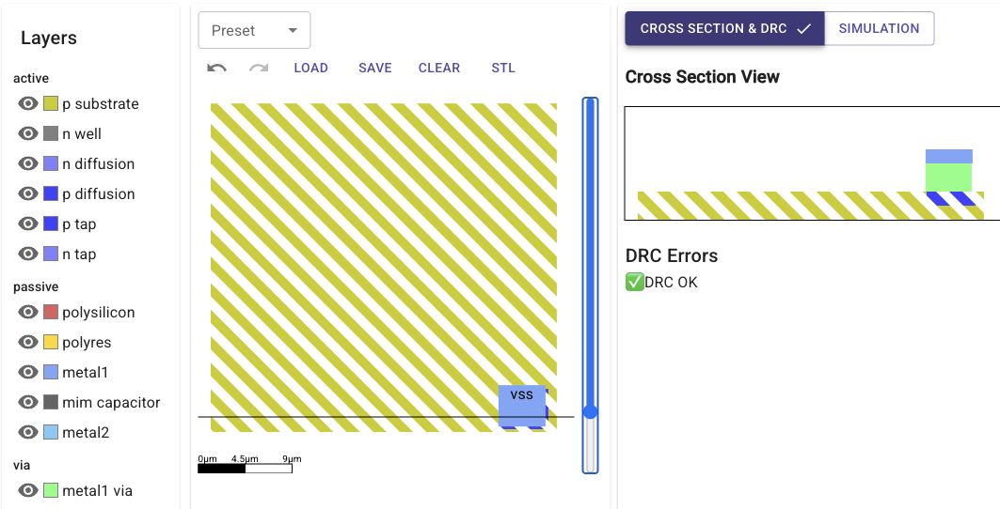
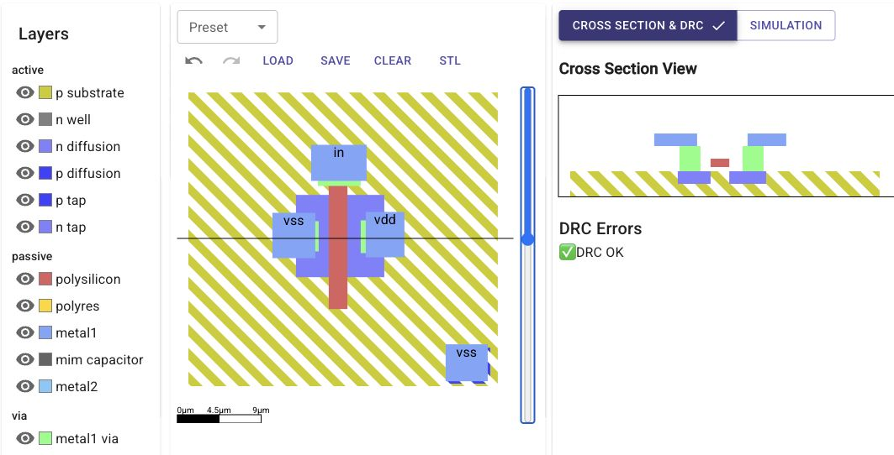
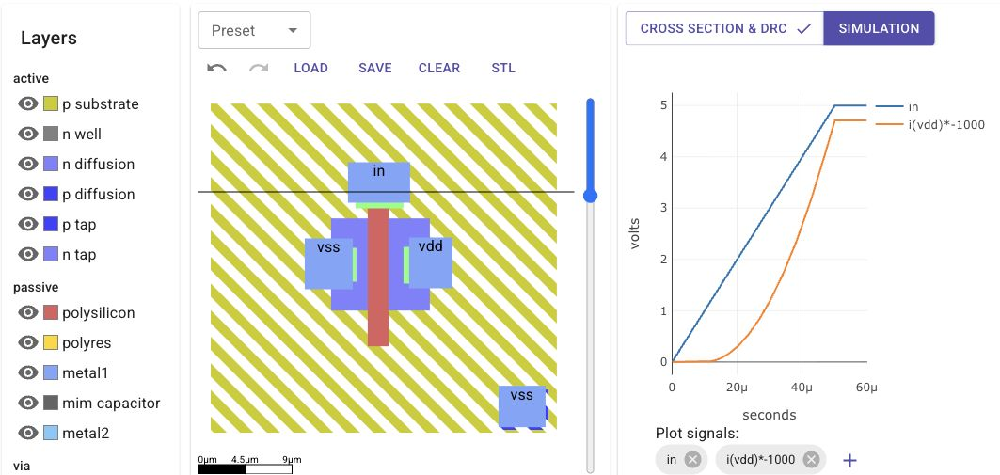
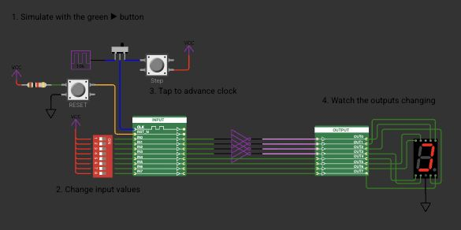
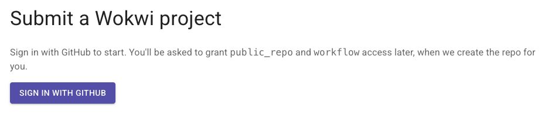
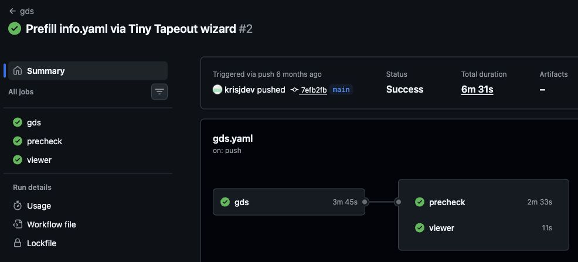

Tiny Tapeout
TA briefing
Work through these 3 exercises before assisting. During the workshop, jump to the step where a participant is stuck. Tap any screenshot to open it full size.
Before you start
- Open the September training recording from the original TA training email. Ask the workshop lead for access if needed.
- Use a laptop and sign in to Wokwi and GitHub. Create a GitHub account if you need one.
- Confirm the assigned shuttle and where to get your training coupon with the workshop lead. A shuttle is a shared chip manufacturing run.
Task 1 · SiliWiz
Draw a transistor
Build an NMOS transistor and see how the gate voltage controls the flow of current.
- Find the ground connection. Select Cross Section & DRC above the right panel. Drag the blue slider beside the canvas down until its horizontal line crosses the existing
vsspad in the lower right. This is the p tap that grounds the substrate. Leave it in place.
Start here. Keep the lower-right vsspad. - Draw the active area. In the layers list, select n diffusion. Click and drag on the canvas to draw a square in the middle.
- Draw the gate. Choose polysilicon and draw a narrow vertical strip all the way across the square. Extend it above and below the square. Move the slider through the gate and check that the cross-section shows an n-type region on either side.
- Add 3 contacts. Choose metal1 via. Put 1 contact inside the diffusion on each side of the gate. Place the third contact on the polysilicon extension outside the square.
- Add metal pads. Select metal1 and draw a small rectangle over each via. Keep the 3 pads separate.
- Label the pads. Click each new metal pad and choose Set Label. Use
infor the gate,vssfor one diffusion pad (source) andvddfor the other (drain). Drag the slider to the middle of the transistor to check the result.
Compare the 3 new pads on the canvas. In the right panel, look for two diffusion regions with the gate between them and DRC OK. - Run the simulation. Select Simulation beside Cross Section & DRC. Watch the blue
intrace (gate voltage) and the orange current trace. The orange trace starts flat, then climbs as the gate voltage rises.
A working transistor switches on. Look for the orange curve rising after the blue line starts.
Check your work. You can see regions on both sides of the gate, and the drain current rises as the transistor turns on. Compare with the completed SiliWiz example in a separate tab.
Cross-section looks wrong or current stays flat
Missing regions? Move the slider to cut through both diffusion regions and the gate. Check that the polysilicon crosses the entire square on the correct layer.
Current stays flat? Check the labels exactly, then inspect each metal pad, via and the material beneath it. Look for touching pads and check the original p tap still connects to vss. Fix one issue at a time and rerun the simulation.
Task 2 · Wokwi
Build and simulate a logic gate
Use a 2-input AND gate for this refresher. The output is 1 only when both inputs are 1.
- Make your own copy. Open the arrow menu beside Save and choose Save a copy. Give your copy a name and save it. If you can’t save, sign in first.

Use Save a copy in the menu beside Save. - Test the starter. Press green Play at the top of the simulation pane. Toggle one of the first 4 red switches. Its corresponding display segment should respond. Each starting gate is an inverter, which flips the input value.

Follow left to right from the red switches, through the green blocks and the 4 inverters, to the display. - Clear the old logic. Press Stop. Click each of the 4 inverters and press Delete. Keep the green blocks and the switches, display and wiring outside them.
- Place the AND gate. Open +, scroll to Logic, and select AND. Drag it into the space between the 2 green blocks.
- Draw 3 wires. Click a port to start a wire and click the destination port to finish it. Click an empty spot along the way if you need a corner.
- IN0 on the right edge of the green input block → AND input A.
- IN1 on that same edge → AND input B.
- AND output → OUT0 on the left edge of the green output block.

Match the 3 wires attached to the purple gate. Use the data ports IN0 and IN1 just below the clock and reset. - Run all 4 tests. Press Play. Toggle the first 2 switches through the combinations shown below. Watch the display segment connected to your first output.
- Save your working circuit. Press Stop, save, and copy the URL of your own Wokwi project. You’ll use it in Task 3.
| Input A | Input B | Output |
|---|---|---|
| 0 | 0 | 0 |
| 0 | 1 | 0 |
| 1 | 0 | 0 |
| 1 | 1 | 1 |
Check your work. The corresponding display segment lights only for the 1 + 1 input combination. The saved URL opens your copy.
Simulation fails or the output is wrong
Simulator shows ERC warnings? Read the first electrical rules warning. Follow that wire to both endpoints. Check for an unsnapped connection, a wire shorting signals together, or 2 outputs driving the same wire.
Output never changes? Stop the simulation. Trace each input from its switch through the green input block to the gate. Trace the result through the green output block to the display. Check that you’re watching the segment for the output you actually used.
Still stuck? Run the original starter in another tab. If its switches work, compare its connections with the saved circuit. After any change, run all 4 test combinations again.
Task 3 · Tiny Tapeout + GitHub
Build and submit the chip layout
Use your Wokwi circuit to generate a GDS file, which describes the physical layout of the chip. Tiny Tapeout runs the checks before the design can go into the assigned manufacturing run.
- Sign in to the wizard. Open the Wokwi submission wizard and choose Sign in with GitHub.

Use the same GitHub account that should own the project repository. - Paste the project link and choose the run. In Project Information, paste the URL of the Wokwi copy you saved. In the run dropdown, select the shuttle assigned by the lead and continue.

Tiny Tapeout’s example shows the 2 fields to look for. Use your own project link and the run assigned for your session. - Fill in the design details. In Project Details, enter a title, a short description and labels for the pins you used. For the AND example, label the first 2 inputs A and B and the first output Y. This circuit does not use a clock.

Use the example to locate the fields. Fill them in for your own design. - Create the GitHub repository. Under Create & Build, choose Authorize GitHub if prompted. Check the active GitHub account, then choose Create Repo. Once the repository appears, open its link.

The portal creates the repository and starts the build. - Check the build. Open the repository’s Actions tab and select the latest
gdsrun. On Summary, wait for Success and green checks beside bothgdsandprecheck.
Open Actions in GitHub to see the build status, logs and results. 
A passing build has green checks on gdsandprecheck. View this example run. - Submit with the assigned coupon. Once the checks pass, return to the wizard’s Submit to shuttle screen. Recheck the run shown above it. Enter the assigned workshop code in Coupon code, then choose Submit. If you’re missing a code, the code fails, or the portal asks you to pay, pause and ask the lead.

Check the run above the form and use the Coupon code field. The run shown here is an example. - Verify and share the result. Check the portal shows the design as submitted for the assigned run. Copy its Tiny Tapeout project URL and share it in the private TA training thread. If you stopped at the build or precheck, tell the lead which stage you reached.
Check your work. The gds build and Precheck pass. For an authorised submission, you can show the portal status and the Tiny Tapeout link in the form app.tinytapeout.com/projects/<number>.
GitHub access, build, precheck or coupon problems
GitHub access error? Check the active GitHub account and have the participant complete the authorisation prompt. If Tiny Tapeout can’t read the design, check the Wokwi project link opens and points to the saved copy.
Build is queued or running? Wait and check the latest run in Actions. Creating another repository won’t finish the existing run.
Build or Precheck fails? Open the first failed step or check and read its error. If it points to the circuit, fix and save the Wokwi design. In the existing GitHub repository, open Actions, select the gds workflow, and choose Run workflow. Check the new run before attempting to submit.
Wrong run, rejected coupon or unexpected amount? Pause before confirming and ask the workshop lead. Keep coupon details in the private team channel.
Help a participant who’s stuck
- Find the step. Ask what they were trying to do, what they expected, and what actually happened.
- Check the last thing that worked. Jump to the relevant panel and expand it for SiliWiz, Wokwi, or submission. Have the participant make one change and run the same test again.
- Hand off cleanly. If the issue persists, send the lead the task and step, the exact error, what you’ve already tried and, if relevant, the project link. Use the private team channel. Leave passwords and coupon codes out of screenshots and logs.
Before you assist
- Show a SiliWiz transistor that turns on in simulation.
- Show your saved Wokwi circuit passing all 4 AND gate tests.
- Show your Tiny Tapeout project and its status. Share the submitted project link privately once the submission is complete.
Check in with the workshop lead if you’re new to the rota or any step is unfinished.